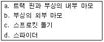
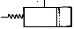
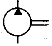
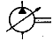
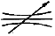
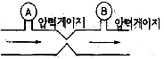

굴삭기운전기능사 (2006-01-22 기출문제)
1. 기관을 시동하기 전에 점검할 사항으로 가장 관계가 적은 것은?
- 연료의 량
- 냉각수 및 엔진오일의 량
- 기관의 온도
- 유압유의 량
(정답률: 79%)

2. 과급기(Turbo charger)에 대한 설명 중 옳은 것은?
- 피스톤의 흡입력에 의해 임펠러가 회전한다.
- 가솔린 기관에만 설치된다.
- 연료 분사량을 증대시킨다.
- 실린더 내의 흡입 공기량을 증가시킨다.
(정답률: 65%)
3. 오일여과기의 역할은?
- 오일의 순환작용
- 연료와 오일 정유작용
- 오일 세정작용
- 오일의 압송
(정답률: 48%)
4. 디젤기관에서 노킹을 일으키는 원인으로 맞는 것은?
- 흡입공기의 온도가 너무 높을 때
- 착화지연 기간이 짧을 때
- 연료에 공기가 혼입되었을 때
- 연소실에 누적된 연료가 많아 일시에 연소할 때
(정답률: 39%)
5. 디젤기관의 연료 분사량이 일정하지 않고, 차이가 많을 때의 현상으로 맞는 것은?
- 연료 분사량에 관계없이 기관은 순조로운 회전을 한다.
- 연료소비에는 관계가 있으나 기관 회전에 영향은 미치지 않는다.
- 연소 폭발음의 차가 있으며 기관은 부조를 하게 된다.
- 출력은 일정하나 기관은 부조를 하게 된다.
(정답률: 79%)
6. 기관 과열의 직접적인 원인으로 부적당한 것은?
- 팬벨트의 느슨함
- 라디에이터의 코어 막힘
- 냉각수의 부족
- 타이밍 체인(timing chain)의 헐거움
(정답률: 68%)
7. 기관의 밸브간극이 너무 클 때 발생되는 현상으로 맞는 것은?
- 정상온도에서 밸브가 확실하게 닫히지 않는다.
- 밸브 스프링의 장력이 약해진다.
- 푸시로드가 변형된다.
- 정상온도에서 밸브가 완전히 개방되지 않는다.
(정답률: 40%)
8. 디젤기관에서 시동이 잘 안 되는 원인으로 가장 적절한 것은?
- 냉각수의 온도가 높은 것을 사용할 때
- 보조탱크의 냉각수량이 부족할 때
- 낮은 점도의 기관오일을 사용할 때
- 연료계통에 공기가 들어있을 때
(정답률: 75%)
9. 작업 중 냉각계통의 순환여부를 확인하는 방법은?
- 유압계의 작동상태를 수시로 확인한다.
- 엔진의 소음으로 판단한다.
- 전류계의 작동상태를 수시로 확인한다.
- 온도계의 작동상태를 수시로 확인한다.
(정답률: 70%)
10. 오일과 오일 링의 작용(역할) 중 오일의 작용에 해당되지 않는 것은?
- 방청작용
- 냉각작용
- 응력분산 작용
- 오일제어 작용
(정답률: 36%)
11. 기관의 실린더 수가 많을 때의 장점이 아닌 것은?
- 기관의 진동이 적다.
- 저속회전이 용이하고 큰 동력을 얻을 수 있다.
- 연료소비가 적고 큰 동력을 얻을 수 있다.
- 가속이 원활하고 신속하다.
(정답률: 56%)
12. 전기회로에서 퓨즈의 설치 방법은?
- 직렬
- 병렬
- 직.병렬
- 상관없다.
(정답률: 54%)
13. 교류발전기에서 발생되는 유도기전력의 크기와 관계없는 것은?
- 전자력의 크기
- 스테이터 코일의 권수
- 발전기의 회전속도
- 콘덴서 수
(정답률: 57%)
14. 기관을 회전하여도 전류계가 움직이지 않는 원인으로 틀린 것은?
- 전류계 불량
- 스테이터코일 단선
- 레귤레이터 고장
- 축전지 방전
(정답률: 41%)
15. 축전지의 전해액의 비중이 낮아지면 어는 온도는 어떻게 되는가?
- 낮아진다.
- 높아진다.
- 관계없다.
- 일정하지 않다.
(정답률: 67%)
16. 발전기의 전기자에서 발생되는 전류는?
- 직류
- 맥류
- 교류
- 정전기
(정답률: 56%)
17. 축전지 터미널의 식별방법이 아닌 것은?
- 부호(+, -)로 식별
- 굵기로 분별
- 문자(P, N)로 분별
- 요철로 분별
(정답률: 65%)
18. 클러치 판(clutch plate)의 변형을 방지하는 것은?
- 압력판
- 쿠션 스프링
- 토션 스프링
- 릴리스레버 스프링
(정답률: 41%)
19. 화물을 적재하고 주행할 때 포크와 지면과의 간격으로 가장 적당한 것은?
- 지면에 밀착
- 20∼30cm
- 50∼55cm
- 80∼85cm
(정답률: 75%)
20. 유압식 굴삭기에서 센터 조인트의 기능은?
- 상.하부의 연결을 기계적으로 해준다.
- 상부 회전체의 오일을 하부 주행모터에 공급한다.
- 상부 회전체의 중심역할을 한다.
- 엔진에 연결되어 상부 회전체에 동력을 공급한다.
(정답률: 47%)
21. 다음 중 불도저 트랙 장력이 너무 팽팽하게 조정되었을 때 보기와 같은 부분에서 마모가 가속되는 부분(기호)을 모두 나열한 항은?

- a, c
- a, b, d
- a, b, c
- a, b, c, d
(정답률: 61%)
22. 다음 설명에서 올바르지 않은 것은?
- 장비의 그리스 주입은 정기적으로 하는 것이 좋다.
- 엔진오일 교환시 여과기도 같이 교환한다.
- 최근의 부동액은 4계절 모두 사용하여도 무방하다.
- 장비운전, 작업시 기관회전수를 낮추어 운전한다.
(정답률: 53%)
23. 타이어식 건설기계 장비에서 평소에 비하여 조작력이 더 요구될 때(핸들이 무거울 때)점검해야할 사항으로 가장 거리가 먼 것은?
- 기어박스 내의 오일
- 타이어 공기압
- 타이어 트레드 모양
- 앞바퀴 정렬
(정답률: 41%)
24. 굴삭기의 3대 주요 구성부품으로 가장 적당한 것은?
- 상부 회전체, 하부 추진체, 중간 선회체
- 작업장치, 하부 추진체, 중간 선회체
- 작업장치, 상부 선회체, 하부 추진체
- 상부 조정장치, 하부 추진체, 중간 동력장치
(정답률: 59%)
25. 현가장치에 사용되는 공기스프링의 특징이 아닌 것은?
- 차체의 높이가 항상 일정하게 유지된다.
- 작은 진동을 흡수하는 효과가 있다.
- 다른 기구보다 간단하고 값이 싸다.
- 고유진동을 낮게 할 수 있다.
(정답률: 62%)
26. 지게차 조향핸들에서 바퀴까지의 조작력 전달순서로 다음 중 가장 적합한 것은?
- 핸들→피트먼 암→드래그링크→조향기어→타이로드→조향암→바퀴
- 핸들→드래그링크→조향기어→피트먼 암→타이로드→조향암→바퀴
- 핸들→조향암→조향기어→드래그링크→피트먼 암→타이로드→바퀴
- 핸들→조향기어→피트먼 암→드래그링크→타이로드→조향암→바퀴
(정답률: 50%)
27. 차마가 도로 이외의 장소에 출입하기 위하여 보도를 횡단하려고 할 때 가장 적절한 통행방법은?
- 보행자 유무에 구애받지 않는다.
- 보행자가 없으면 서행한다.
- 보행자가 있어도 차마가 우선 출입한다.
- 보도직전에서 일시 정지하여 보행자의 통행을 방해하지 말아야 한다.
(정답률: 82%)
28. 도로에서 차로별 통행구분에 따라 통행하여야 한다. 위반이 아닌 경우는?
- 여러 차로를 연속적으로 가로지르는 행위
- 갑자기 차로를 바꾸어 옆 차선에 끼어드는 행위
- 두 개의 차로를 걸쳐서 운행하는 행위
- 일방통행 도로에서 중앙 좌측부분을 통행하는 행위
(정답률: 76%)
29. 건설기계관리법 상 건설기계 조종사의 면허를 받을 수 있는 자는?
- 심신 장애자
- 마약 또는 알코올 중독자
- 사지의 활동이 정상적이 아닌 자
- 파산자로서 복권되지 아니한 자
(정답률: 83%)
30. 건설기계등록신청은 건설기계를 취득한 날로부터 얼마의 기간 이내 하여야 하는가?
- 5일
- 15일
- 1월
- 2월
(정답률: 38%)
31. 정기검사의 연기 사유가 아닌 것은?
- 건설기계를 도난당한 때
- 건설기계를 압류당한 때
- 소유자가 국내에서 여행중인 때
- 건설기계대여사업을 휴지한 때
(정답률: 74%)
32. 중앙선이 황색 실선과 황색 점선의 복선으로 설치된 때는?
- 어느 쪽에서나 중앙선을 넘어서 앞지르기를 할 수 있다.
- 점선 쪽에서만 중앙선을 넘어서 앞지르기를 할 수 있다.
- 어느 쪽에서나 중앙선을 넘어서 앞지르기를 할 수 없다.
- 실선 쪽에서만 중앙선을 넘어서 앞지르기를 할 수 있다.
(정답률: 71%)
33. 다음 중 가장 우선하는 신호는?
- 신호기의 신호
- 경찰관의 수신호
- 안전표시의 지시
- 신호등의 신호
(정답률: 81%)
34. 고속도로가 아닌 편도 4차로의 도로에서 지게차가 주행하는 차로는?
- 2차로, 3차로
- 3차로
- 3차로, 4차로
- 4차로
(정답률: 82%)
35. 직동형, 평형피스톤형 등의 종류가 있으며 회로의 압력을 일정하게 유지시키는 밸브는?
- 릴리프 밸브
- 메이크업 밸브
- 시퀸스 밸브
- 무부하 밸브
(정답률: 63%)
36. 가변용량 유압펌프의 기호는?




(정답률: 59%)
37. 유압유에 요구되는 성질이 아닌 것은?
- 넓은 온도범위에서 점도변화가 적을 것
- 윤활성과 방청성이 있을 것
- 산화 안정성이 있을 것
- 사용되는 재료에 대하여 불활성이 아닐 것
(정답률: 63%)
38. 베인펌프의 일반적인 특성 설명 중 맞지 않는 것은?
- 맥동과 소음이 적다.
- 소형,경량이다.
- 간단하고 성능이 좋다.
- 수명이 짧다.
(정답률: 52%)
39. 유압펌프에서 오일이 토출될 수 있는 것은?
- 회전방향이 반대로 되어있다.
- 흡입관 혹은 스트레이너가 막혀있다.
- 펌프입구에서 공기를 흡입하지 않는다.
- 회전수가 너무 낮다.
(정답률: 37%)
40. 유압장치의 부품을 교환 후 다음 중 가장 우선시행하여야 할 작업은?
- 최대부하 상태의 운전
- 유압을 점검
- 유압장치의 공기빼기
- 유압 오일쿨러 청소
(정답률: 61%)
41. 액츄에이터의 운동속도를 조정하기 위하여 사용되는 밸브는?
- 압력제어 밸브
- 온도제어 밸브
- 유량제어 밸브
- 방향제어 밸브
(정답률: 61%)
42. 오리피스가 설치된 다음 그림에서 압력에 대한 설명으로 맞는 것은?

- A=B
- A>B
- A<B
- A와 B는 무관
(정답률: 50%)
43. 단위 시간에 이동하는 유체의 체적을 무엇이라 하는가?
- 토출압
- 드레인
- 언더랩
- 유량
(정답률: 61%)
44. 유압 구성부품을 분해하기 전에 내부압력을 제거하려면 어떻게 하는 것이 좋은가?
- 압력밸브를 밀어준다.
- 너트를 서서히 푼다.
- 엔진 정지 후 조정레버를 모든 방향으로 작동하여 압력을 제거한다.
- 엔진 정지 후 상관없이 개방해도 된다.
(정답률: 74%)
45. 유압펌프 관련 용어에서 GPM이 나타내는 것은?
- 복동 실린더의 치수
- 계통 내에서 형성되는 압력의 크기
- 흐름에 대한 저항
- 계통 내에서 이동되는 유체(오일)의 양
(정답률: 57%)
46. 유압 작동유의 중요 역할이 아닌 것은?
- 일을 흡수한다.
- 부식을 방지한다.
- 습동부를 윤활시킨다.
- 압력에너지를 이송한다.
(정답률: 51%)
47. 기중기로 물건을 운반할 때 주의사항으로 틀린 것은?
- 규정무게보다 초과하여 사용하여야 한다.
- 적재물이 떨어지지 않도록 한다.
- 로프 등의 안전 여부를 항상 점검한다.
- 선회작업 전에 작업 반경을 확인한다.
(정답률: 86%)
48. 안전사고 발생의 원인이 아닌 것은?
- 적합한 공구를 사용하지 않았을 때
- 안전장치 및 보호 장치가 잘되어 있지 않을 때
- 정리정돈 및 조명 장치가 잘되어 있지 않을 때
- 기계 및 장비가 넓은 장소에 설치되어 있을 때
(정답률: 78%)
49. 바이스 사용시 주의사항 설명으로 올바른 것은?
- 바이스 조를 앤빌로 사용하지 않는다.
- 바이스를 꼭 조이기 위해서 손잡이를 길게 사용한다.
- 가공물을 손상시킬 수 있는 바이스에서는 조보호 판을 사용하지 않는다.
- 용접이나 납땜으로 바이스를 수리한다.
(정답률: 45%)
50. 안전관리에서 산업재해의 원인과 가장 거리가 먼 것은?
- 방호장치 결함
- 불안전한 조명
- 불안전한 환경
- 안전수칙 준수
(정답률: 77%)
51. 다음 중 안전사고 발생의 가장 큰 원인인 것은?
- 본인의 실수
- 공장설비 부족
- 공구사용 잘못
- 장비사용 잘못
(정답률: 72%)
52. 전기 기기에 의한 감전 사고를 막기 위하여 필요한 설비로 다음 중 가장 중요한 것은?
- 고압계
- 접지 설비
- 방폭등
- 대지 전위 상승장치
(정답률: 78%)
53. 안전교육의 목적으로 맞지 않는 것은?
- 능률적인 표준작업을 숙달시킨다.
- 소비절약 및 안전보호구의 설계능력을 배양한다.
- 위험에 대처하는 능력을 기른다.
- 작업에 대한 주의심을 파악할 수 있게 한다.
(정답률: 63%)
54. 안전표지 중 안내 표지의 바탕색으로 맞는 것은?
- 백색
- 흑색
- 적색
- 녹색
(정답률: 60%)
55. 일반 작업환경에서 지켜야 할 안전사항으로 맞지 않는 것은?
- 반드시 안전모를 착용한다.
- 해머는 반드시 장갑을 끼고 작업한다.
- 주유시는 동력을 차단한다.
- 고장 전기에는 적색 표지판을 부착한다.
(정답률: 81%)
56. 스패너 사용 방법 설명으로 틀린 것은?
- 스패너와 너트가 맞지 않으면 쐐기를 넣어 맞추어 쓴다.
- 스패너를 해머 대신에 써서는 안 된다.
- 스패너에 파이프를 끼우던가 해머로 두들겨서 사용하지 않는다.
- 스패너는 올바르게 끼우고 앞으로 잡아당겨 사용한다.
(정답률: 80%)
57. 154kV 지중 송전선로 설치방식 중 틀린 것은?
- 관로식
- 암거식(전력구식)
- 메신저와이어 부설식
- 직매식
(정답률: 42%)
58. 철탑 부근에서 굴착 작업시 유의하여야 할 사항 설명 중 올바른 것은?
- 철탑 기초가 드러나지만 않으면 굴착하여도 무방하다.
- 철탑 부근이라 하여 특별히 주의해야 할 사항이 없다.
- 한국전력에서 철탑에 대한 안전여부 검토 후 작업을 해야 한다.
- 철탑은 강한 충격을 주어야만 넘어질 수 있으므로 주변 굴착은 무방하다.
(정답률: 87%)
59. 액화천연가스에 대한 설명 중 틀린 것은?
- 기체 상태는 공기보다 가볍다.
- 가연성으로써 폭발의 위험성이 있다.
- LNG라고 하며 메탄이 주성분이다.
- 액체 상태로 배관을 통하여 수요자에게 공급된다.
(정답률: 47%)
60. 도시가스 배관이 매설된 도로에서 굴착작업을 할 때 준수사항으로 틀린 것은?
- 가스배관이 매설된 지점에서는 도시가스회사의 입회하에 작업한다.
- 가스배관은 도로에 라인마크를 하기 때문에 라인마크가 없으면 직접 굴착해도 된다.
- 어떤 지점을 굴착하고자 할 때는 라인마크, 표지판, 밸브박스 등 가스배관의 유무를 확인하는 방법도 있다.
- 가스배관의 매설유무는 반드시 도시가스 회사에 유무 조회를 하여야 한다.
(정답률: 85%)